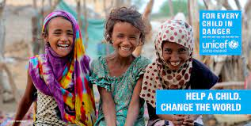

categories
world charity
When Bryce Olson was diagnosed with advanced prostate cancer, he sequenced the DNA of his tumor and opened doors to new...

charity
spread happiness through charity.

unicef children
When people come together, they can make a big impact. Charities depend on individuals who commit to giving small amounts. While donations from big groups are great, a community that cares about a charity and who they serve is essential. It’s those small donations that add up. The power of community proves that when people care and come together, change is more than possible. This inspires others around the world and encourages more participation in charities.